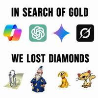

0

Thousands of Chicago-area Zillow and Trulia listings disappeared after Midwest Real Estate Data cut off Zillow's access to its feed, "in the latest escalation of a legal battle with Lisle-based Midwest Real Estate Data (MRED)," reports the Chicago Sun-Times. "The fight is over MRED's private listing network, where homes for sale are shared among real estate professionals. And MRED followed through on a threat to cut Zillow's access to its listing data feed." From the report: There were nearly 5,000 Chicago homes listed on Zillow Tuesday, but as of Wednesday afternoon, that number plummeted to about 1,700. Meanwhile, other listing sites like Redfin and Realtor.com show about 5,000 to 8,000 listings in Chicago. MRED manages listings -- submitted by brokers -- throughout Illinois, as well as parts of Wisconsin and Indiana. The regional multiple listing service has more than 43,000 members and processed more than 264,000 listings worth $43 billion in 2025. The loss of listings on Zillow's websites have made a behind-the-scenes real estate industry fight public. And it now hinders some consumers in their search to buy a home, while also limiting the marketing opportunity for sellers. The legal fight is basically over who gets to control how home listings are marketed and displayed online.
Zillow recently adopted a rule saying that if a home is marketed privately, such as behind a paywall, login, or private listing network, it should not also appear on Zillow. The policy, the real estate marketplace says, is meant to discourage "pocket listings," preserve transparency, and make sure buyers can see the full market.
MRED sees it differently. It expanded its private listing network and partnered with Compass, which wants to give sellers more control over whether their homes are broadly publicized or marketed privately first. MRED argues that Zillow is violating MLS rules and licensing agreements by refusing to display certain listings, including private Compass listings. Consumers are now caught in the middle...
Read more of this story at Slashdot.
Vivaldi 8.0 is being pitched as the browser's "most significant design overhaul" yet, featuring a new unified, edge-to-edge interface, six preset layouts, and deeper customization across tabs, toolbars, panels, and themes. The company is also taking a swipe at rivals chasing questionable AI features. Neowin reports: After updating to version 8.0, Vivaldi will present you with the ability to select one of the six pre-built styles. You can select a minimal edge-to-edge theme, one with the UI fully hidden for focused work, or a power user variant with everything on the screen. The update comes with a built-in collection theme, and users are free to select one of over 7,000 community themes available on the official website.
Vivaldi says that while other browsers were busy adding questionable AI features, it focused on "a foundation that no other browser can match" with flexible tab management, built-in productivity tools, and advanced customization. At the same time, Vivaldi does not force the new design onto its users, so those who prefer the previous user interface can go back to it at any moment in settings. "With 8.0, we have done something we have been working toward for a long time: we have given the browser itself a visual system worthy of everything it can do," says Vivaldi's CEO and co-founder, Jon Stephenson von Tetzchner. "With this update Vivaldi feels like one considered, coherent tool."
You can download Vivaldi 8.0 and view the changelog at their respective links.
Read more of this story at Slashdot.
Waymo has paused service in Atlanta after one of its driverless cars entered a flooded street and got stuck. It follows a similar pause in San Antonio that prompted a recent software recall (PDF) over flood avoidance. TechCrunch reports: Waymo admitted that it hadn't finished developing a "final remedy" for avoiding flooded areas when it issued its software recall last week. Instead, the company said that it shipped an update to its fleet that placed "restrictions at times and in locations where there is an elevated risk of encountering a flooded, higher-speed roadway," according to documents released by the National Highway Traffic Safety Administration (NHTSA).
But even those precautions apparently were not enough to stop the Waymo robotaxi from entering the flooded intersection in Atlanta. Waymo told TechCrunch on Thursday that the storm in Atlanta produced so much rainfall that flooding was happening before the National Weather Service had issued a flash flood warning, watch, or advisory. The company said its fleet those alerts are part of a larger set of signals it relies on to prepare the vehicles for poor weather.
Read more of this story at Slashdot.
Microsoft has hired games analyst and investor Matthew Ball as Xbox's new chief strategy officer. With a long track record of analyzing the video game market and industry's biggest shifts, Ball's background could help Xbox rethink its hardware and console strategy at a moment when competition is tougher than ever. Engadget reports: Ball is a venture capitalist and tech industry consultant with a well-documented history of analyzing emerging digital economies and the video game market. He was most recently the CEO and founder of Epyllion, an advisory firm and digital production house that also runs a large-scale metaverse investment fund, and he publishes regular breakdowns of the industry's biggest players and trends, including an annual State of Gaming report. Ball is the author of The Metaverse, a book beloved by Tim Sweeney, Mark Zuckerberg, Karlie Kloss and, not awkwardly at all, former Xbox head Phil Spencer.
Read more of this story at Slashdot.
An anonymous reader quotes a report from TechCrunch: OpenAI claims its new reasoning model has produced an original mathematical proof disproving a famous unsolved conjecture in geometry, which was first posed by Paul Erdos in 1946. If this sounds familiar to you, it's because this isn't the first time OpenAI has made such a bold claim. Seven months ago, the AI giant's former VP Kevin Weil posted on X: "GPT-5 found solutions to 10 (!) previously unsolved Erds problems and made progress on 11 others."
It turns out, GPT-5 didn't actually solve those problems; it just found solutions that already existed in the literature. Taunts from rivals like Yann LeCun and Google DeepMind CEO Demis Hassabis followed, and Weil promptly took down his premature post. Today, at least, it seems OpenAI didn't make the same mistake twice. Alongside the announcement, the company published companion remarks (PDF) in support of the disproof from mathematicians like Noga Alon, Melanie Wood, and Thomas Bloom, who maintains the Erdos Problems website, and previously called Weil's post "a dramatic misrepresentation."
[...] The proof, per OpenAI, came from a new general-purpose reasoning model, not a system specifically designed to solve math problems or even this problem in particular. OpenAI says this is significant because it means AI systems are now more capable of holding together long, difficult chains of reasoning and connecting ideas across fields in ways researchers may not have previously explored. That has implications for biology, physics, engineering, and medicine.
Read more of this story at Slashdot.
NASA Administrator Jared Isaacman says he expects China to fly taikonauts around the moon in 2027, "ratcheting up perceptions of a space race between China and the United States," reports SpaceNews. He is using that prospect to argue for a revamped Artemis strategy and an accelerated path toward a U.S. lunar return. From the report: "The next time the world tunes in to watch astronauts fly around the moon, which will likely be sometime in 2027, they will be taikonauts, and America will no longer be the exclusive power to send humans into the lunar environment," he said. While Isaacman has frequently discussed a race with China to be the next to land humans on the moon, this was one of the first times he predicted a 2027 Chinese crewed circumlunar mission. He repeated the comments later in the day at an industry reception.
China has not publicly announced plans for such a mission, which, as Isaacman described it, would likely be similar to NASA's Artemis 2 mission in April. There have been rumors of a mission along those lines, though, and an expectation of a roadmap of missions leading to a Chinese crewed landing by the end of the decade. So far, all the crewed missions to fly around, orbit or land on the moon have been flown by NASA: nine Apollo missions from 1968 to 1972 and Artemis 2. All the astronauts on those missions have been Americans except for Canadian Space Agency astronaut Jeremy Hansen on Artemis 2.
Isaacman has used the threat that China could land astronauts on the moon before NASA returns there as a rationale for revamping the Artemis lunar exploration program. In February, he announced that Artemis 3, which was to be a lunar landing attempt in 2028, will instead be a test flight in low Earth orbit in 2027, followed by a landing on Artemis 4 in 2028. In March, he changed other elements of Artemis at the agency's Ignition event, including effectively canceling the lunar Gateway to focus resources instead on a lunar base, while calling for a much higher cadence of robotic lander missions.
Read more of this story at Slashdot.
Colossal Biosciences says it has grown chickens inside 3D-printed artificial eggshells. "The company says the egg technology could help conserve at-risk bird species," reports MIT Technology. "It could also play a role in a project to re-create the extinct giant moa, a flightless 12-foot-tall bird that once lived in New Zealand and laid four-liter eggs, larger than those of any living bird." From the report: The biotech company today claimed it has developed a "fully artificial egg" as part of its effort to resurrect extinct avian species, including birds like the dodo and the giant moa. But "artificial eggshell" would probably be a better description for the invention. It's an oval-shaped printed lattice, coated inside with a special silicone-based membrane that lets in oxygen, just as a real eggshell does. To generate birds, Colossal took recently laid chicken eggs and carefully poured their contents into the artificial shells, where they continued growing. A window on top lets researchers peek inside. "To see them all moving around in their artificial eggs was absolutely mind blowing," says Andrew Pask, the company's chief biology officer. "You really feel you can grow life outside of the womb."
[...] The work on the artificial eggshell was carried out in Dallas by Colossal's exogenous development team, or Exo Dev. That group is also trying to develop artificial wombs for mammals, starting with marsupials. "We're looking at every single facet of what's happening during a mammalian pregnancy to unpack exactly how we then go about recapitulating that," says Pask. For that team, an artificial eggshell is a relatively quick and easy technical win. That's because chickens are already an example of ex utero development. After an egg is laid, a small embryo sitting on top of the yolk starts growing, drawing nutrients from the yolk, the white, and even the shell, which provides calcium. (Colossal says it has to add ground-up calcium to the artificial eggs.)
In order to create a moa, Colossal will have to genetically alter another type of bird, changing potentially thousands of DNA letters. But so far, chickens are the only bird species that can be genetically engineered. And that's via a tricky process of editing stem cells that produce egg and sperm. Scientists have to add or delete DNA letters from these cells and then inject them back into an egg. The resulting bird will carry the genetic changes in its gonads -- and then be able to pass them on. Pask says Colossal's idea is that it could modify avian stem cells enough to produce moa-like sperm or eggs. But then you might have the odd situation of a chicken laying an egg with a moa embryo inside it. "You would have chickens making moa egg and moa sperm. But it's still a chicken egg," he says.
Read more of this story at Slashdot.
While other commencement speeches have been met with boos for hyping up artificial intelligence, Apple cofounder Steve Wozniak reminded college graduates that they already posses "AI" of their own: "actual intelligence." He framed AI as an attempt to duplicate brain-like routines, and encouraged students to "think different" as they enter a workforce being reshaped by automation. Business Insider reports: Steve Wozniak did what other college graduation commencement speakers couldn't this year: earn applause when talking about AI. The Apple cofounder took the stage during Grand Valley State University's graduation ceremony earlier this month. During his speech, Wozniak offered reassurance to new graduates who are entering the workforce at the height of the AI revolution.
"It would take too long to go deeply into what I think about AI, but we've been trying to create a brain," Wozniak said. "Is there a way we can duplicate a routine a trillion times and have it work like a brain? AI is one of those attempts." [...]
During his commencement address, Wozniak reflected on working at Apple and offered students some advice as they begin their careers. "You should always try to think different," he said. "Don't follow the same steps as a million other people. Think, is there something I can do a little different?" You can watch the clip on YouTube.
Read more of this story at Slashdot.
An anonymous reader quotes a report from Reuters: AT&T on Wednesday filed suit (PDF) against California officials seeking a court order declaring it does not have to continue offering traditional copper wire phone service to new customers as it vowed to spend $19 billion on modern telecom services. California requires the U.S. wireless carrier to spend $1 billion annually to maintain a century-old telephone network that few use, AT&T said, saying the network now serves just 3% of households in AT&T's California territory.
AT&T's suit named the California Public Utilities Commission and the state attorney general. AT&T said it is committing to investing $19 billion in California as it works to connect more than 4 million additional households and businesses across California by 2030 and added IP-based networks are far more reliable and efficient. AT&T also Wednesday asked the Federal Communications Commission for permission to discontinue traditional phone service in parts of California where it has faster, more reliable service available. It also filed a petition with the FCC to declare that California's rules that effectively require AT&T to power, repair and sell traditional phone service, even after the FCC has authorized the service to be phased out, are preempted by federal standards.
AT&T added that transitioning from copper will save an estimated 300 million kilowatt-hours annually by 2030 or the equivalent of eliminating emissions from 17 million gallons of gasoline. The company added that California has already suffered about 2,000 outages from copper thefts this year and it struggles to find replacement parts. The federal government and virtually all states where AT&T historically offered copper-wire service "have now eliminated outdated regulatory obstacles" allowing AT&T to begin powering down its old network and increasing its investments in modern communication technologies, the company said in its lawsuit filed in U.S. District Court in southern California.
Read more of this story at Slashdot.
Trump called off a planned AI executive order just hours before a signing ceremony because he said he was worried the framework could slow America's lead over China. "We're leading China, we're leading everybody, and I don't want to do anything that's going to get in the way of that lead," Trump told reporters. The Associated Press reports: The order would have established a framework for the government to vet the national security risks of the most advanced AI systems before their public release, according to a person familiar with the White House's deliberations with the tech industry but not authorized to speak about it publicly. The directive was being characterized as a voluntary collaboration with participating U.S.-based tech companies, including Anthropic, OpenAI and Google, the person said.
There are competing factions within the administration, said Serena Booth, a computer science professor at Brown University and former AI policy fellow in a Democratic-led Senate committee. "We do see this kind of public fighting," she said. "'We will release an executive order. No, we won't. We're going to sign it this afternoon. Oh, the signing is canceled.' I think this whiplash is because we're seeing these fractures.'"
Some of those divides are balancing what Booth said is a "reasonable idea" to test the most capable AI models before their public release, with a concern that government scrutiny, if it takes too long, could burden AI developers. "It does come at a potential very large cost to innovation and speed of development," she said. "There is, I think, a real risk here and I do see both sides." [...]
"They don't want to do it because it's politically risky in a million different ways," said Dean Ball, now at the Foundation for American Innovation. Ball said he would welcome an executive order that would get those companies working more closely with the government on cybersecurity but "ultimately, I'm fine with them taking time to get this right."
Read more of this story at Slashdot.
An anonymous reader quotes a report from the Quantum Insider: The Trump administration is preparing a new round of industrial policy aimed at quantum computing, with roughly $2 billion in grants expected to go to nine companies developing quantum hardware and related technologies. According to Reuters, citing a Wall Street Journal report, the U.S. Department of Commerce plans to distribute the funding through deals that also give the federal government equity stakes in the companies receiving the awards. The approach would expand Washington's increasingly direct involvement in sectors viewed as strategically important to national security, advanced manufacturing and competition with China.
Reuters reported that IBM is expected to receive the largest share of the package at about $1 billion. Semiconductor manufacturer GlobalFoundries is slated to receive approximately $375 million, according to the report. Other recipients are expected to include D-Wave Quantum, Rigetti Computing, Quantinuum and Infleqtion, with each company potentially receiving around $100 million, Reuters reported. Australian quantum startup Diraq could receive about $38 million, according to the Wall Street Journal report cited by Reuters. Fast Company notes in its reporting that IBM will invest the funds it receives into a new IBM company called Anderon. It will also match the grant with another $1 billion in cash.
"Anderon will operate as a state-of-the-art 300-millimeter quantum wafer foundry," IBM stated in an announcement. "It will help the nation solidify its leadership at the center of a thriving new quantum industry that is estimated to generate up to $850 billion in economic value by 2040 and spur American economic growth while also bolstering national security."
Quantum computing stocks soared after the news. As of publication, IBM is up about 9.7%, D-Wave is up about 28.1%, and Rigetti is up about 26.7%. Meanwhile, Global Foundries rose about 13.8% and Infleqtion jumped about 30.9%.
Read more of this story at Slashdot.
Spotify is launching "Reserved," a new feature that will set aside concert tickets for Premium subscribers it identifies as an artist's most dedicated fans based on streams, shares, and other activity. "Getting concert tickets today can feel like a race you're set up to lose," Spotify wrote in a post on Thursday. "You show up at the right time, refresh endlessly, and still miss out. Too often, the experience is stressful, unpredictable, and disconnected from what should matter most: whether real fans actually get tickets. We think there's a better way." From the Hollywood Reporter: Spotify said that starting in the U.S. this summer, select artists will be able to use Reserved to set aside tickets for fans on the platform. The platform has partnered with Live Nation on the program as part of a multiyear agreement. The platform will use streams, shares and other types of activity to "identify an artist's most dedicated fans and hold two tour tickets for them."
Fans selected through Reserved will get up to two tickets, and they'll have a day-long window to make a ticket purchase if selected. Spotify didn't give any details on what artists will work with the streaming service for the new feature, or how many tickets artists would set aside with Reserved, though the service acknowledged "there will be significantly more superfans than there are seats available on a tour, so not every fan will receive an offer."
Read more of this story at Slashdot.
SpaceX has revealed its financials for the first time as it prepares for a potentially massive IPO. The New York Times reports: SpaceX's revenue soared to $18.7 billion in 2025, up 33 percent from a year earlier, the company disclosed in a filing required of firms that are seeking to go public. In the first three months of this year, revenue rose to $4.7 billion from $4.1 billion in the same period a year ago. But the company lost more than $4.9 billion last year, compared with a $791 million profit in 2024, as capital expenditures nearly doubled to $20.7 billion from heavy spending on artificial intelligence development. In the first three months of this year, SpaceX lost almost as much money as all of 2025, recording a $4.3 billion loss.
Read more of this story at Slashdot.
A new Oxford Longevity Project report argues that individuals bear at least 80% of the responsibility for ill health in old age. "The report (PDF), launched at the Smart Ageing Summit in Oxford last week, argues that individuals have far greater control over their longevity than is commonly understood," reports The Guardian. "The authors call on the government to take legislative action on alcohol comparable to restrictions on smoking." From the report: Living Longer, Better -- the Oxford Longevity Project's first Age-less report -- was co-authored by an interdisciplinary panel of UK-based experts in medicine, physiology, ageing and education policy. It was sponsored by Oxford Healthspan. The report's authors, Sir Christopher Ball, Sir Muir Gray, Dr Paul Ch'en, Leslie Kenny and Prof Denis Noble, present the figure of 80% as a conservative estimate. [...] The claim, however, has been described as simplistic and said to neglect wider arguments about whether people are genuinely in control of individual choices when it comes to issues including poverty, pollution and healthcare access.
[...] Ball, however, pointed to research including the Landmark Twins Study, where researchers concluded at least 75% of human lifespan is determined by environmental and modifiable lifestyle factors. He also cited large-scale analysis led by Oxford Population Health using data from nearly 500,000 UK Biobank participants which found that environmental exposures and habits carry far greater weight in premature death and biological ageing than inherited genetics. The report's recommendations include avoiding processed foods, abstaining entirely from alcohol, prioritising sleep, not eating after 6.30pm, and cultivating what it calls "a not-meat mindset." On alcohol, it takes a position more forthright than current government guidance. "Alcohol is toxic, don't drink it," said Ball. "The report bravely says so -- whereas the government is afraid to tell the public the truth."
Read more of this story at Slashdot.
BrianFagioli writes: Flipper Devices has finally revealed Flipper One, a Linux-powered cyberdeck that sounds less like a gadget and more like an attempt to rebuild portable ARM computing from the ground up. Unlike Flipper Zero, which focuses on offline protocols like RFID and Sub-1 GHz radio, Flipper One is all about networking, modular hardware, SDR experimentation, local AI, and upstream Linux kernel support. The company says it wants to build "the most open and best-documented ARM computer in the world," complete with zero vendor BSP dependency and as few binary blobs as possible. That alone is enough to get Linux folks paying attention.
The hardware itself is loaded with nerd bait: dual Gigabit Ethernet, Wi-Fi 6E, M.2 expansion for SSDs and 5G modems, GPIO add-ons, HDMI 2.1, and a dual-processor architecture pairing a Rockchip RK3576 with a Raspberry Pi RP2350 microcontroller. Flipper Devices is even developing its own small-screen Linux UI framework because squeezing KDE onto tiny touchscreens is miserable. The company openly admits the project is financially and technically terrifying, which honestly makes this announcement feel more believable than most startup hardware pitches. Whether Flipper One succeeds or not, it is one of the most ambitious Linux hardware projects in years.
Read more of this story at Slashdot.
Ashley Stewart / Business Insider : Memo: Yusuf Mehdi, a 35-year Microsoft veteran who has been its commercial chief marketing officer since 2023, will leave the company after the next fiscal year — Yusuf Mehdi, a 35-year Microsoft veteran who has been its commercial chief marketing officer since 2023, will leave the company …
Lulu Yilun Chen / Bloomberg : Sources: DeepSeek execs told potential investors in its ongoing $10B round that it will prioritize groundbreaking AI research over short-term commercialization — DeepSeek's senior management has told potential investors in its ongoing 70 billion yuan ($10 billion) funding round that the startup …
Ana-Maria Stanciuc / The Next Web : Italian police dismantle a piracy network that streamed paid content from Netflix and others via an app called Cinemagoal with annual subscriptions of €40-€130 — Italy's Guardia di Finanza said on Friday it had dismantled an audiovisual piracy operation that streamed paid content from Sky …
Justin Papp / CNBC : Republican House Oversight Committee Chairman James Comer says he requested information from Kalshi and Polymarket on their efforts to prevent insider trading — Rep. James Comer, R-Ky., chair of the House Oversight and Government Reform Committee, announced Friday on CNBC's “Squawk Box” …
Cate Lawrence / Tech.eu : Driverless car startup Bliq.ai says it has received approval for fully driverless road operations in Estonia, the first authorization of its kind in the EU — The authorisation is the first of its kind in the EU, allowing its remotely supervised autonomous vehicles to operate on public roads without a driver behind the wheel.
Ashley Stewart / Business Insider : Sources and documents detail Satya Nadella's effort to revamp Microsoft's senior leadership, creating a startup-style operating model to compete in the AI race — CEO Satya Nadella just dismantled the senior leadership structure that has run Microsoft for decades.
Sergiu Gatlan / BleepingComputer : US and Canadian authorities arrest 23-year-old Jacob Butler, known online as “Dort”, for allegedly operating the Kimwolf DDoS botnet, which infected ~2M devices — U.S. and Canadian authorities arrested and charged a Canadian man with operating the KimWolf distributed denial-of-service …
Mariella Moon / Engadget : Meta releases Forum, a Reddit-like standalone app for Facebook Groups, with a feed showing Group conversations and an AI-powered “Ask” feature, on iOS — It's a new dedicated app for Facebook Groups. — Meta has launched a new app called Forum without fanfare or even an official announcement.
Wall Street Journal : Internal Binance reports and sources reveal Iran moved billions through Binance to fund entities like the IRGC, with some transactions as recent as this month — Transactions on world's largest crypto exchange took place despite repeated red flags; Binance says it has ‘zero-tolerance for illicit activity’
Cheng Ting-Fang / Nikkei Asia : AMD CEO Lisa Su projects the CPU market will grow over 35% annually through 2031, up from 3% to 4% historically, driven by AI inference and agentic AI demand — TAIPEI — AMD CEO Lisa Su is predicting the market for central processing units (CPUs) will grow massively over the next five years …
Reuters : Lenovo reports Q4 revenue up 27% YoY to $21.6B, above $18.7B est., net profit up 479% to $521M, above $271M est., as the PC maker pushes into AI server markets — Lenovo Group (0992.HK) reported a better-than-expected 27% jump in quarterly revenue on Friday, as strong consumer demand …
Takashi Mochizuki / Bloomberg : Sources: Nintendo asked partners and suppliers to assemble ~20M Switch 2 consoles by March 2027, ~20% above the 16.5M public sales outlook issued in early May — Nintendo Co. has asked partners and suppliers to assemble about 20 million Switch 2 consoles in the year through March …
CJ Haddad / CNBC : Meta, Broadcom, Applied Materials, GlobalFoundries, and Synopsys launch a $125M “Semiconductor Hub” at UCLA to advance AI chip research and more — Broadcom, Meta, Applied Materials, GlobalFoundries and Synopsys are joining forces to launch a $125 million “Semiconductor Hub” at the UCLA Samueli School of Engineering.
Politico : Sources: David Sacks told President Trump that federal reviews of AI models before release would slow down innovation and hurt the US in its AI race with China — But during a conversation with Trump, Sacks told the president that companies were already cooperating, and that having …
Washington Post : Sources: last-minute calls with Elon Musk, Mark Zuckerberg, David Sacks, and others helped persuade President Trump not to sign the highly anticipated AI EO — Industry leaders warned in last-minute calls to the president that the proposed safety vetting system could inhibit development of the pivotal technology.